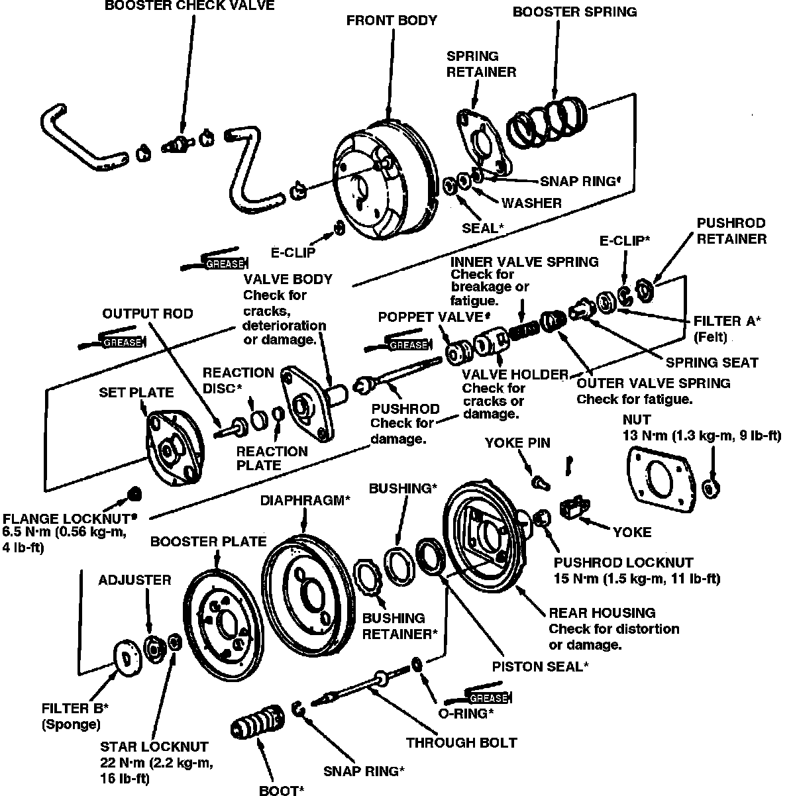

Disassembly and Assembly
On Legend, Vigor & 1990-91 Integra models, do not disassemble brake booster, if found faulty replace as an assembly.DISASSEMBLE
Fig. 6 Brake Booster Exploded View:

1. Scribe installation alignment mark across front and rear booster housing.
2. Remove E-clips, then separate front and rear housing.
3. Remove booster spring seal and washers, then remove snap rings, Fig. 6.
4. Remove spring plate and booster spring.
5. Remove set plate attaching locknuts, then set plate.
6. Remove valve body assembly from rear housing.
7. Remove through bolt boots.
8. Remove booster plate and diaphragm from rear housing.
9. Remove snap rings, through bolts and O-rings from rear housing.
10. Remove bushing retainer, bushing and piston seal from rear housing.
11. Remove output rod, reaction disc and reaction plate from valve body assembly.
12. Remove pushrod yoke, star locknut, adjuster and filter B from valve body.
13. Remove pushrod retainer, then pushrod from valve body.
14. Remove pushrod E-clip.
15. Remove pushrod filter A, spring seat, valve springs, valve holder and poppet valve.
ASSEMBLE
1. Install poppet valve on valve holder.
2. Install valve holder, inner and outer valve springs and spring seat to pushrod.
3. Install filter A and E-clip to pushrod.
4. Apply suitable silicone grease to inner and outer valve body tube.
5. Press pushrod assembly in valve body, then install pushrod retainer.
6. Install filter B, then install adjuster and star locknut to pushrod. Do not tighten.
7. Apply suitable silicone to piston seal, then install seal to housing. Ensure seal lip is facing inward.
8. Install piston seal and bushing in rear housing, then drive retainer in until 6 mm below rear housing edge. If seal is driven more than 6 mm, it may become distorted.
9. Install through bolts, O-ring and snap rings.
10. Install diaphragm on booster plate.
11. Install booster plate to rear housing, aligning tabs and slots.
12. Install through bolt boots.
13. Apply suitable silicone grease to rear housing bore and valve body assembly outer surface.
14. Install valve body assembly to rear housing.
15. Apply suitable silicone grease to valve body bore, then install reaction plate, reaction disc and output rod.
16. Install set plate and torque attaching nuts to 4 ft. lbs.
17. Install booster spring.
18. Install spring retainer on through bolts, aligning square portions of bolts and retainer.
19. Compress booster spring and plate, then install snap rings.
20. Install seal and washer.
21. Using alignment marks, assemble front and rear housings.
22. Depress front housing, then install E-clips on through bolts.